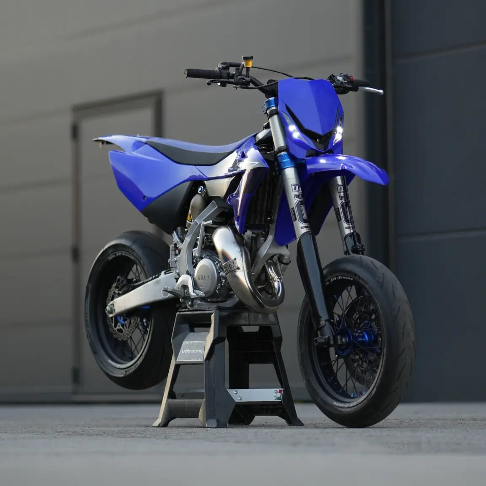

Yamaha YZ 125
Prezzo: € 11.499
Caratteristiche Tecniche:
- Motore: 1 cilindro, 2 tempi
- Cilindrata: 125 cc
- Potenza: 38 CV
- Trasmissione: 6 marce
- Sospensione anteriore: Forcella a steli rovesciati KYB
- Sospensione posteriore: Monoammortizzatore KYB
- Peso: 94 kg
- Capacità serbatoio: 8 litri